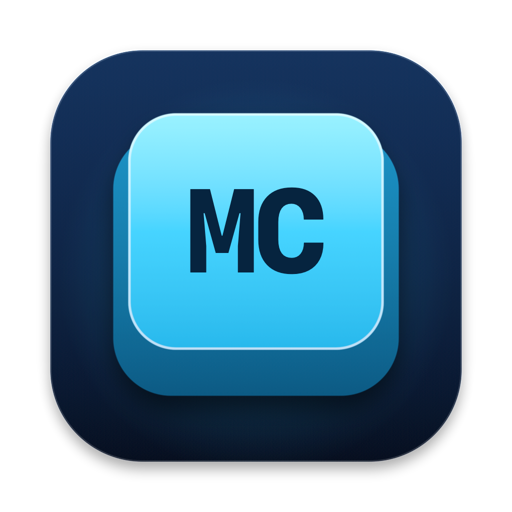

Mac Commander 다운로드 GitHubAI 코딩 시대의 문서 작업대. 프로젝트 폴더의 마크다운을, 터미널 옆에서 바로 읽는다.
Claude Code 같은 AI 도구는 계획서·명세·회의록을 마크다운으로 쏟아 냅니다. Mac Commander는 그 폴더를 열어 두고 터미널을 옆에 붙인 채 읽는 앱입니다. AI가 고친 파일은 트리에 점이 찍히고, 문서에서는 바뀐 문단이 칠해지고, 읽던 문단은 단축키 한 번으로 터미널 입력줄에 넘어갑니다.
⌃` 로 창 옆에 터미널을 붙이고, 버튼 하나로 그 폴더에서 Claude Code를 띄웁니다. cd 할 일이 없습니다.
AI가 파일을 고치면 트리에 점이 찍히고, 열어 둔 문서는 저절로 다시 그려지면서 바뀐 문단이 칠해집니다. 무엇이 바뀌었는지 찾아 헤맬 필요가 없습니다.
고칠 곳을 골라 옆에 뜨는 버튼을 누르거나 ⌥⌘↩ 를 누르면 그 문단이 출처 줄과 함께 터미널 입력줄로 넘어갑니다. 뒤에 지시만 이어 쓰면 됩니다.
트리 하나, 뷰어 하나. 왼쪽 트리에서 파일을 고르면 오른쪽 뷰어에 바로 그려집니다. 가장 기본이 되는 배치입니다.
mcom은 지금 폴더를, mcom plan.md는 그 문서를 엽니다. 도움말 메뉴에서 한 번 설치합니다.마크다운. 표·코드 블록·인용·체크리스트를 앱 테마에 맞춰 그립니다. 긴 문서에는 오른쪽에 목차가 붙고, 문서 폴더의 상대 경로 이미지도 그대로 보입니다. ⌘E로 그 자리에서 고칩니다.
위 형식은 MD 보기에서도 트리에 나타납니다. 그 밖의 파일은 ALL 보기에서 텍스트로 엽니다. 마크다운·PDF·HTML·텍스트는 ⌘F로 본문을 찾고, 트랙패드 핀치로 확대합니다.
dmg를 열고 앱을 응용 프로그램 폴더에 끌어다 놓으세요. Developer ID로 서명하고 Apple 공증을 받았기 때문에 경고 없이 실행됩니다.
Mac Commander는 모든 기능이 무료이고 소스 코드가 공개되어 있습니다. 후원금은 새 기능과 버그 수정, Apple 개발자 계정·공증 비용에 씁니다.